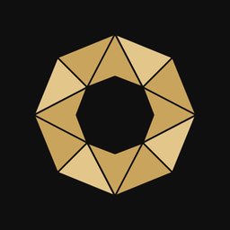
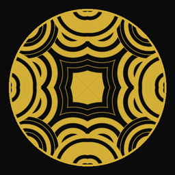

Élő kaleidoszkóp zenével. Örvények, spirálok, szőtt minták, holdak és tükrös Art Deco minták váltják egymást – soha nem ugyanúgy.A living kaleidoscope with music. Vortices, spirals, woven patterns, moons and mirrored Art Deco designs follow each other – never the same way twice.

Lassan forgó, lélegző Art Deco mandala hangtálzenével. Időnként elsöpri önmagát, mint a tibeti szerzetesek homokmandalája, aztán újjáépül.A slowly turning, breathing Art Deco mandala with singing-bowl music. From time to time it sweeps itself away, like a Tibetan sand mandala, and is born again.
A két app együtt, olcsóbban, mint külön-külön. Egyetlen licenckulcs mindkettőt megnyitja, és mindkettőben havonta új minták érkeznek.Both apps together, for less than separately. One licence key opens both, and both get new patterns every month.
A licenckulcsot az appban, a ⚙ beállítópanelen add meg.Enter your licence key in the app, on the ⚙ settings panel.